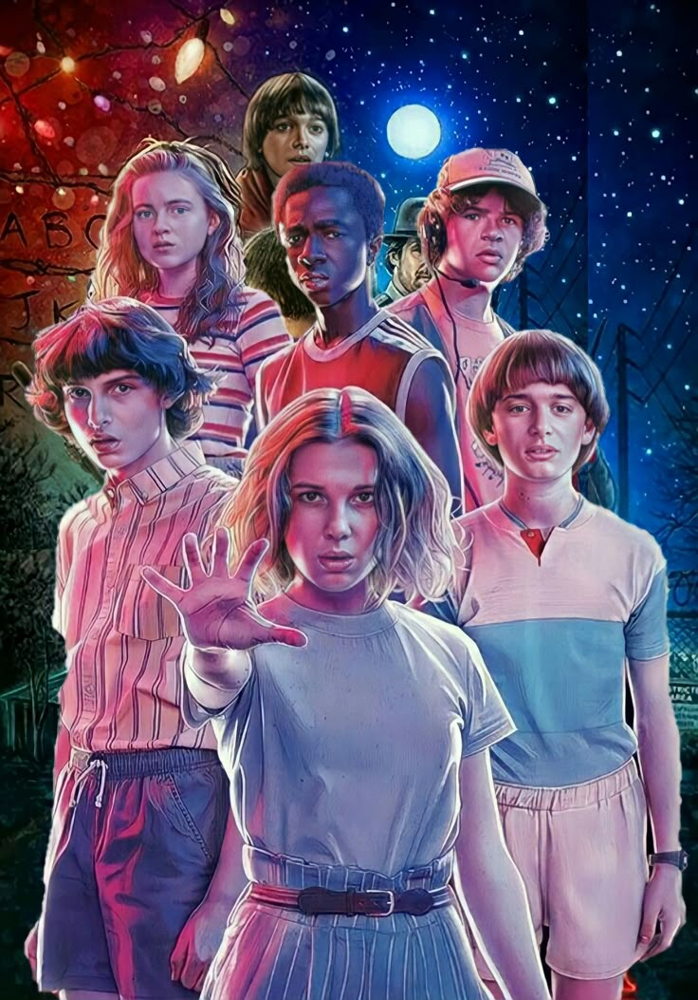
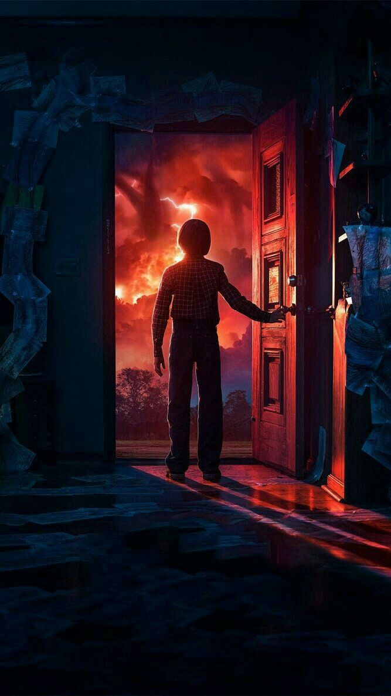
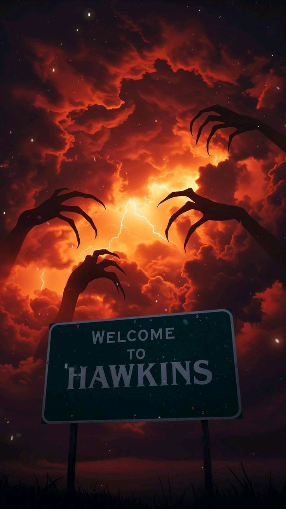

Stranger Things is a science fiction, mystery, and horror series created by the Duffer Brothers. Set in the 1980s, it chronicles the paranormal events that occur in the small town of Hawkins, Indiana.
Abstract
The story begins on November 6, 1983, in the town of Hawkins, Indiana. 12-year-old Will Byers, after spending the day playing Dungeons & Dragons with his friends, mysteriously disappears upon returning home. His desperate mother, Joyce, begins the search for Will, while Police Chief Hopper begins an investigation on his own. Shortly after Will's disappearance, a mysterious girl with strange abilities appears in a local cafe. But as the investigation unfolds, they discover that they will not only have to confront a mysterious government organization, but also sinister forces that plan to devour them all.
  Main Characters
The series' protagonists are a group of children and teenagers who face supernatural phenomena while trying to maintain their friendship.
Cast
- Millie Bobby Brown who playsEleven
- Finn Wolfhard who playsMike Wheeler
- Gaten Matarazzo who playsDustin Henderson
- Caleb McLaughlin who playsLucas Sinclair
- Noah Schnapp who playsWill Byers
- Sadie Sink who playsMax Mayfield
- Natalia Dyer who playsNancy Wheeler
- Charlie Heaton who playsJonathan Byers
- Joe Keery who playsSteve Harrington
- Maya Hawke who playsRobin Buckley
- David Harbour who playsJim Hopper
- Winona Ryder who playsJoyce Byers
😱Things you probably didn't know about...😱
- Stranger Things wasn't always called that. Its original title was Montauk, inspired by a government conspiracy called the Montauk Project. This project involved conducting experiments on adults and children to develop new ways to combat the Soviets using psychological techniques and time travel. This caught the attention of the series' creators, Matt and Ross Duffer.
- The Duffer brothers took the search for their leading roles very seriously, so much so that they auditioned 906 boys and 307 girls.
- Eleven, the character played by Millie Bobbie Brown, is based on E.T. the Extra-Terrestrial.
- In episode 4 of the first season, we see one of the scientists wearing a special suit to cross into the Outside Down. When he asks if they can hear him, one of the men replies, "Loud and clear, Shepherd." This name isn't chosen randomly; it's a clear reference to Alan Shepherd, the first American to fly in space.
- The music for Stranger Things was composed by Kyle Dixon and Michael Stein, both members of a band called Survive. The Duffer brothers actually found the band online and contacted them directly.